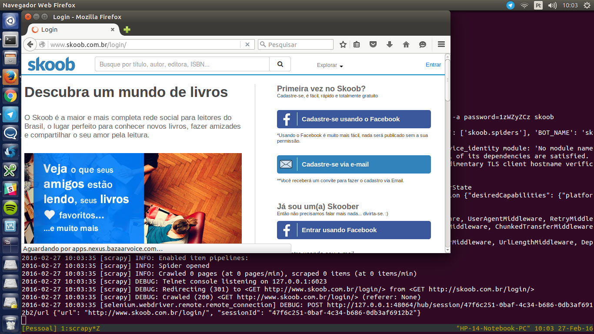

skoober
Extract user's data from Skoob.com.br

Installation
pip install skoober Usage example
To get the data from your Skoob bookshelve, on the skoob/ directory use the following command (make sure you're using Python 2.7):
scrapy crawl -a user=login@server.com -a password=secretpassword skoob
Release History
- 0.3.1
- Bug fixes
- 0.3
- First version using Selenium
- 0.0.1
- Work in progress
Meta
Guido Luz Percú – @oumguido
Distributed under the MIT license. See LICENSE for more information.